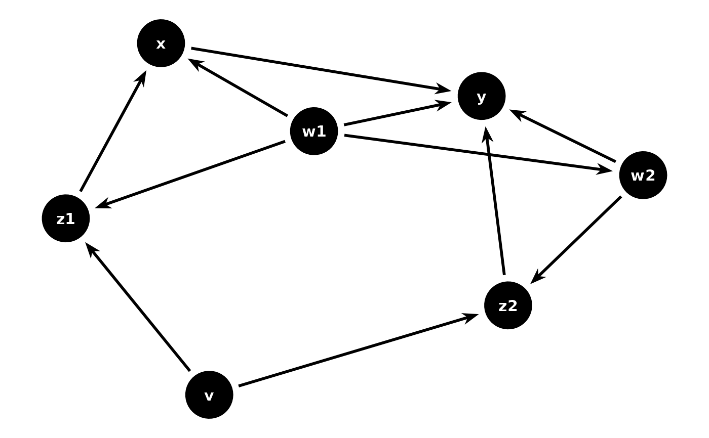
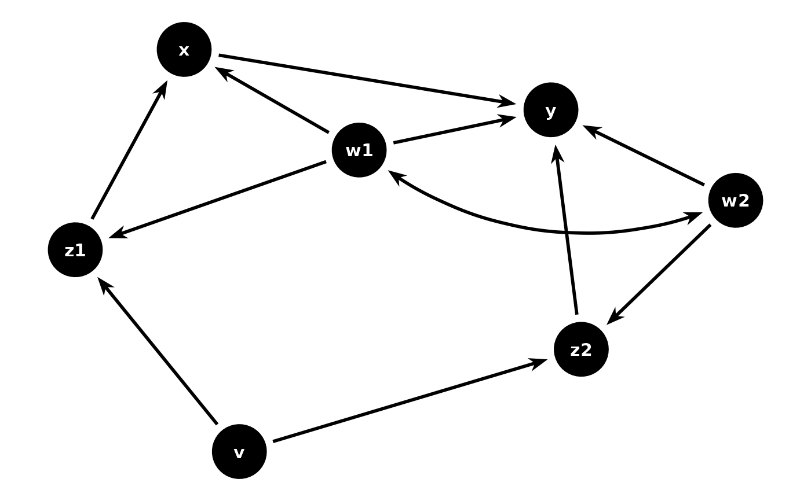

These geoms draw DAG edges using the ggarrow package for rendering,
providing richer arrow styling than the default ggraph-based edge geoms.
geom_dag_arrow() draws straight directed edges,
geom_dag_arrow_arc() draws curved edges (typically for bidirected
relationships), and geom_dag_arrows() is a convenience wrapper that
draws both directed and bidirected edges.
Usage
geom_dag_arrow(
mapping = NULL,
data = NULL,
arrow_head = ggarrow::arrow_head_wings(),
arrow_fins = NULL,
arrow_mid = NULL,
length = 4,
length_head = NULL,
length_fins = NULL,
length_mid = NULL,
justify = 0,
force_arrow = FALSE,
mid_place = 0.5,
resect = 0,
resect_head = NULL,
resect_fins = NULL,
lineend = "butt",
linejoin = "round",
linemitre = 10,
position = "identity",
na.rm = TRUE,
show.legend = NA,
inherit.aes = TRUE,
...
)
geom_dag_arrow_arc(
mapping = NULL,
data = NULL,
curvature = 0.3,
angle = 90,
ncp = 5,
arrow_head = ggarrow::arrow_head_wings(),
arrow_fins = ggarrow::arrow_head_wings(),
arrow_mid = NULL,
length = 4,
length_head = NULL,
length_fins = NULL,
length_mid = NULL,
justify = 0,
force_arrow = FALSE,
mid_place = 0.5,
resect = 0,
resect_head = NULL,
resect_fins = NULL,
lineend = "butt",
linejoin = "round",
linemitre = 10,
position = "identity",
na.rm = TRUE,
show.legend = NA,
inherit.aes = TRUE,
...
)
geom_dag_arrows(
mapping = NULL,
data_directed = filter_direction("->"),
data_bidirected = filter_direction("<->"),
curvature = 0.3,
arrow_head = ggarrow::arrow_head_wings(),
arrow_fins = NULL,
arrow_mid = NULL,
resect = 0,
resect_head = NULL,
resect_fins = NULL,
position = "identity",
na.rm = TRUE,
show.legend = NA,
inherit.aes = TRUE,
...
)Arguments
- mapping
Set of aesthetic mappings created by
ggplot2::aes(). If specified andinherit.aes = TRUE(the default), it is combined with the default mapping at the top level of the plot.- data
The data to be displayed in this layer. There are three options: If
NULL, the default, the data is inherited from the plot data as specified in the call toggplot2::ggplot(). Adata.frame, or other object, will override the plot data. A function will be called with a single argument, the plot data. The return value must be adata.frame, and will be used as the layer data.- arrow_head, arrow_fins, arrow_mid
Arrow ornament functions from ggarrow (e.g.,
ggarrow::arrow_head_wings(),ggarrow::arrow_head_line()). Set toNULLto suppress an ornament.- length, length_head, length_fins, length_mid
Size of arrow ornaments. A numeric value sets the size relative to
linewidth; agrid::unit()sets an absolute size.- justify
A numeric value between 0 and 1 controlling where the arrow is drawn relative to the path endpoints. 0 (default) places the tip at the endpoint; 1 places the base at the endpoint.
- force_arrow
If
TRUE, draw arrows even when the path is shorter than the arrow ornaments. DefaultFALSE.- mid_place
Numeric vector with values between 0 and 1 setting positions for interior arrows, or a
grid::unit()for spacing.- resect
A numeric value in millimetres to shorten the arrow from both ends. Overridden by
resect_head/resect_finsif set.- resect_head, resect_fins
Numeric values in millimetres to shorten the arrow from the head or fins end respectively.
- lineend
Line end style:
"butt"(default),"round", or"square".- linejoin
Line join style:
"round"(default),"mitre", or"bevel".- linemitre
Line mitre limit (default 10).
- position
Position adjustment, either as a string or the result of a call to a position adjustment function.
- na.rm
If
FALSE, removes missing values with a warning. IfTRUE(the default for DAG geoms), silently removes missing values.- show.legend
Logical. Should this layer be included in the legends?
- inherit.aes
If
FALSE, overrides the default aesthetics rather than combining with them.- ...
Other arguments passed on to the layer.
- curvature
A numeric value giving the amount of curvature. Negative values produce left-hand curves, positive values produce right-hand curves, and zero produces a straight line.
- angle
A numeric value between 0 and 180, giving an amount to skew the control points of the curve.
- ncp
The number of control points used to draw the curve. More control points creates a smoother curve.
- data_directed, data_bidirected
The data to be displayed for directed and bidirected edges respectively. By default, these filter the plot data by edge direction.
Value
A ggplot2::layer() object that can be added to a plot.
Details
These geoms require the ggarrow package to be installed. Unlike the
ggraph-based edge geoms, these use ggarrow's native parameter names
(resect_head/resect_fins instead of start_cap/end_cap,
arrow_head/arrow_fins instead of arrow).
Auto-resection: when neither resect nor resect_head/resect_fins are
set by the user, edges are automatically shortened from both ends to avoid
overlapping with nodes. If a node layer (geom_dag_point() or
geom_dag_node()) is already added to the plot, the resection is derived
from the node size. Otherwise, the ggdag.edge_cap option (default: 8mm)
is used as a fallback.
Examples
library(ggplot2)
p <- dagify(
y ~ x + z2 + w2 + w1,
x ~ z1 + w1,
z1 ~ w1 + v,
z2 ~ w2 + v,
w1 ~ ~w2
) |>
ggplot(aes(
x = .data$x, y = .data$y,
xend = .data$xend, yend = .data$yend
))
# Straight directed edges
p + geom_dag_arrow() + geom_dag_point() + geom_dag_text() + theme_dag()

# Both directed and bidirected edges
p + geom_dag_arrows() + geom_dag_point() + geom_dag_text() + theme_dag()

# Custom arrow ornaments
p +
geom_dag_arrow(arrow_head = ggarrow::arrow_head_line()) +
geom_dag_point() +
geom_dag_text() +
theme_dag()